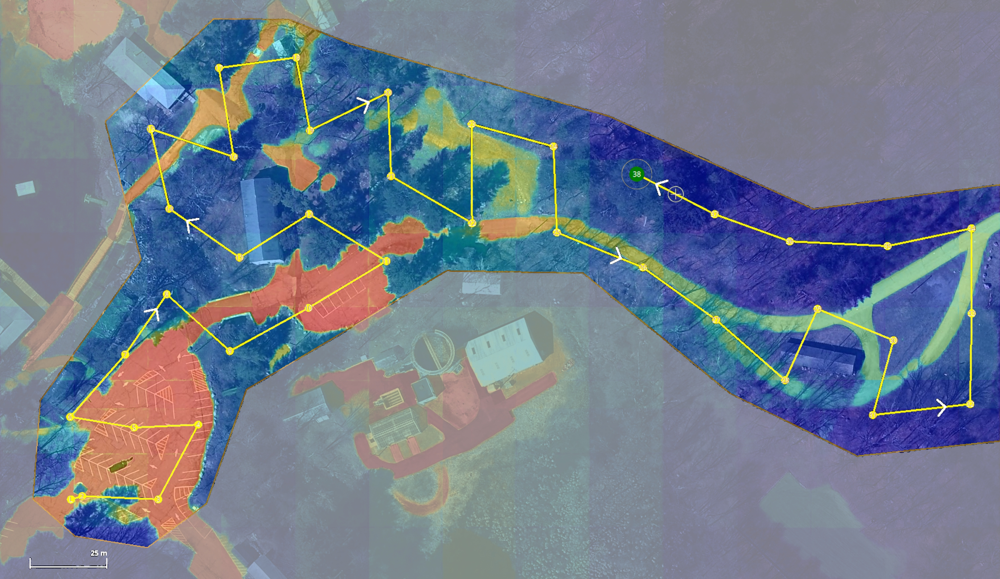
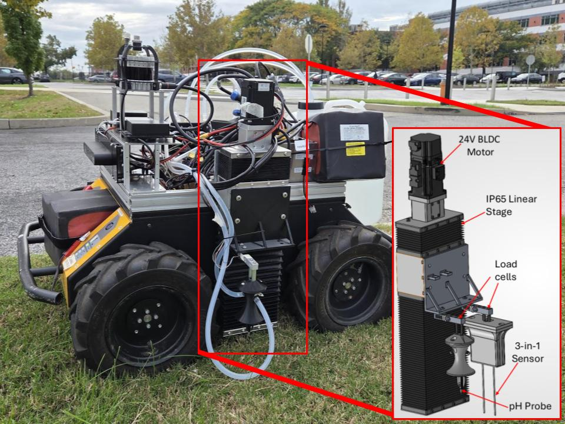
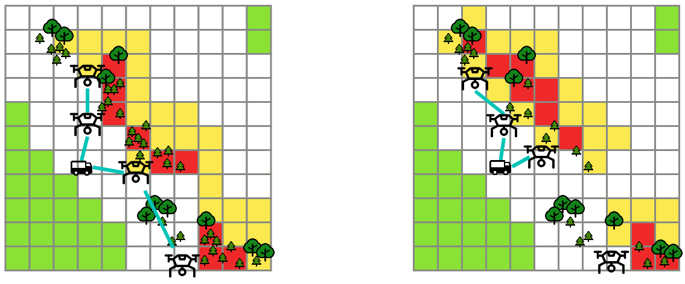
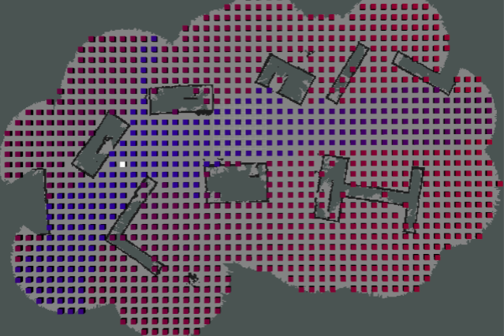
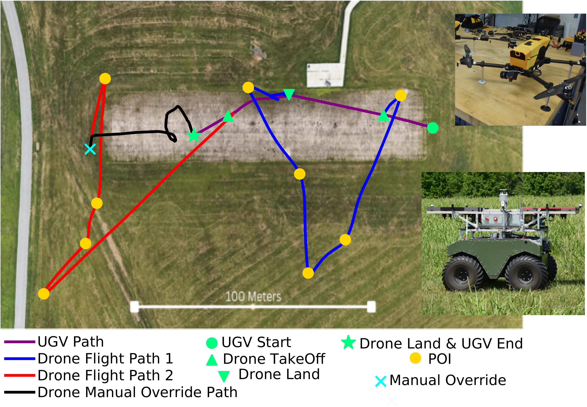
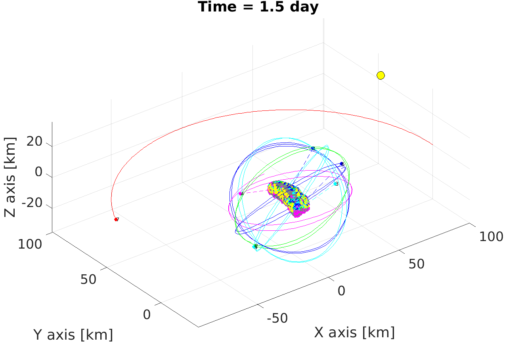
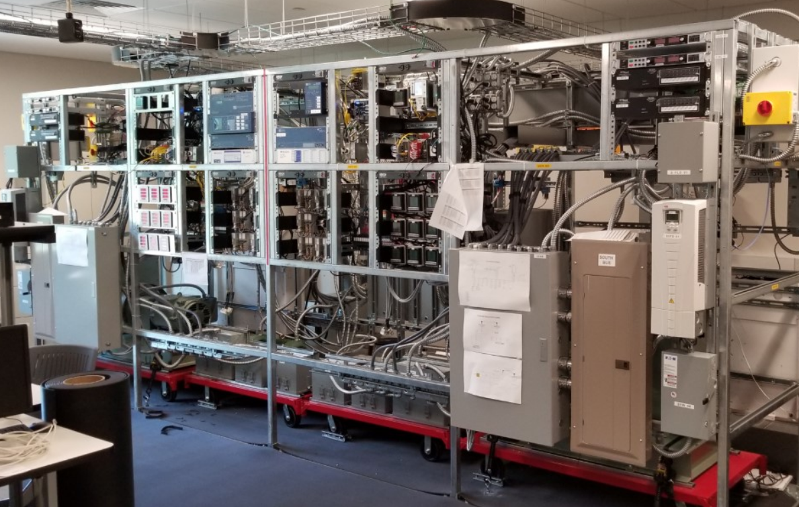

Research
My research elevates resource awareness to a first-class driver of decision-making in multi-agent robotics. Real-world deployment of autonomous robots is fundamentally limited by finite resources — energy, communication, computation, and sensing — and these limitations are acutely stressed in multi-agent settings, where robots must navigate complex interactions with other mechanical, virtual, and living agents pursuing cooperative, competitive, or adversarial objectives. By integrating resource considerations into planning and decision-making, I develop algorithms for resilient autonomy and validate them through real-world deployments in critical domains including agriculture, disaster response, and defense.
Current Research
I am currently incorporating semantic information, computation, and sensing limitations into my work on autonomous decision-making, organized around three thematic threads that extend the breadth of my prior work. The threads span collaborative air-ground target search, closed-loop decision making for agricultural robotics, and computationally tractable alignment of embodied AI with social norms. Together, they advance my broader vision of resource-aware autonomy by treating new resource classes — information, sensing, and computation — as first-class drivers of team-level and on-device decision-making, and each is grounded in ongoing field deployments and active multi-institutional collaborations.
This work focuses on collaborative air-ground robot teams for target search while building on my prior work in resource-aware planning. I am investigating the use of semantically driven search priors to allocate sub-regions between aerial and ground platforms by reasoning about target movement and platform mobility. A parallel effort within this thread addresses how to resolve both spatial and semantic uncertainty of discovered targets within partially connected teams. To coordinate these teams, I have also been investigating scheduling algorithms with a focus on quantifying the mission relevance of information based on sensor uncertainty, information age, and discovery novelty. Together, these components will enable air-ground teams to maintain a shared operational picture despite intermittent connectivity, heterogeneous sensing, and dynamic target behavior.
Relevant publications:
- J. Diller, F. Cladera, C. J. Taylor, and V. Kumar, “LMPath: Language-mediated priors and path generation for aerial exploration,” in AI-Driven Safe Aerial Robotics Workshop, 2026.
- A. K. Srivastava, J. Diller, V. Kumar, and P. Dames, “Spatial-semantic uncertainty in VLM-based target search: Balancing exploration and identification,” in Workshop on Rethinking Uncertainty for Modern Robotics Paradigms, 2026.
- J. Diller, F. Cladera, C. J. Taylor, and V. Kumar, “DORA: Divergence-oriented data-relay algorithm for partially connected robot teams,” submitted to the International Conference on Robotics and Automation (ICRA), 2027.

This thread investigates how autonomous systems can allocate limited sensing and energy resources to map complex physical phenomena, using precision agriculture as a motivating application. The central question it addresses is: how should robots balance the value of acquiring new information against the physical resources required to obtain it? To tackle this challenge, our cross-disciplinary, multi-institutional is investigating autonomous mapping and treatment of soil acidity. We are designing and constructing an autonomous in situ soil pH sensing platform for a mobile ground robot, enabling direct field measurements without manual sampling. To guide sampling actions during deployment, we are developing adaptive sampling algorithms that can jointly reason about sensing uncertainty, travel cost, sampling budgets, and field geometry.
Relevant publications:
- M. Gellar, J. Diller, F. Cladera, K. Huang, S. Rahman Rahmani, S. Carpin, and V. Kumar, “Autonomous soil pH sensing under heterogeneous field conditions,” in From Innovation to Adoption: Hardware, AI, Policy, and Funding Challenges in Agricultural Robotics Workshop, 2026.

As embodied AI is deployed in high-stakes environments, ensuring that autonomous actions align with societal expectations becomes paramount. This work investigates how generative AI can encode societal expectations into feedback mechanisms that steer on-device models in real-time, treating normative alignment as a computational resource management problem. The goal of this thread is to make alignment tractable on computationally constrained robotic platforms by treating the generation and application of normative feedback as resources to be budgeted, scheduled, and traded off against other mission-relevant computation.
Relevant publications:
- J. Diller, D. Barnes, R. Bogdanoff, R. Collier, R. Collins, K. Fieldhouse, Y. Gefen, C. Johnson, A. Kodali, B. Kriel, V. Murali, J. Niehaus, M. Sukharev, J. VanPelt, A. Hoogs, V. Kumar, and A. Basharat, “REBAR: Reference ethical benchmark for autonomy readiness,” submitted to Springer Proceedings in Advanced Robotics, 2026.
Previous Work
This work addressed resource uncertainty commonly encountered when deploying real robots in the field. Some of the major challenges in task planning for multi-robot systems are properly managing robot resources (e.g., capabilities, energy, collaboration) while mitigating failures. I developed a decentralized task allocation architecture for UAVs that reasons over stochastic battery capacities to compute probabilistic guarantees of mission success, with particular interest in decentralized approaches that can adapt to lossy communication links between robots. This line of work culminated in an abstract, team-level planning framework that uses model uncertainty bounds to signal when to recompute team-level task plans online, enabling multi-robot tasking to remain flexible under changing model uncertainty.
Relevant publications:
- J. Diller, Y. S. Teoh, R. Byers, Q. Han, J. G. Rogers, and N. T. Dantam, “Failure-aware tasking for teams of drones,” in Proceedings of the International Conference on Distributed Computing Systems (ICDCS), 2025.
- J. Diller, S. Homsi, and Q. Han, “Semper Gumby: Making multi-robot tasking flexible under changing model uncertainty,” submitted to the International Conference on Autonomous Agents and Multiagent Systems (AAMAS), 2027.

This work focused on developing communication-aware planning methods that model wireless connectivity as a spatial resource, constructing communication maps to optimize robot placement and team sizes. Early work in this area studied how to enable mobile agents to communicate effectively while avoiding malicious communication jamming, exploring various mapping techniques and how to incorporate these maps into the planning process for robot teams. Connecting the energy and communication domains, I identified a fundamental energy tradeoff between waiting for data transmission and traveling to improve bandwidth, and incorporated this tradeoff into a framework that bridges the gap between optimistic offline planning and the stochastic nature of real-world deployments. This framework was applied to the problem of effectively deploying a team of drones to collect data from wireless sensors, combining offline multi-vehicle task planning with online adaptive behavior through a data-driven approach. A major aspect of this work was validating our solution through both simulations and field experiments on our physical testbed.
Relevant publications:
- J. Diller, P. Hall, and Q. Han, “Holistic path planning for multi-drone data collection,” International Conference on Distributed Computing in Smart Systems and the Internet of Things (DCOSS-IoT), 2023.
- J. Diller, N. T. Dantam, J. G. Rogers, and Q. Han, “Communication jamming-aware robot path adaptation,”International Conference on Distributed Computing in Smart Systems and the Internet of Things (DCOSS-IoT), 2023.
- J. Diller, J. G. Rogers, N. T. Dantam, and Q. Han, “Communication mapping for robot teams,” IEEE Transactions on Field Robotics, 2025.
- J. Diller, Q. Han, and M. Desaulniers, “Holistic framework for multi-drone data collection in IoT systems,” ACM Transactions on Internet Technology (TOIT), 2026.

This line of work incorporated realistic UAV energy models into mission-aware speed scheduling, demonstrating improved performance and reduced energy failures over conventional methods. I explored trade-offs in the speed-based energy model and evaluated how these trade-offs could be leveraged to improve path finding, including the problem of launching drones from a ground vehicle that moves along a fixed trajectory. I then extended this framework to model UGV energy consumption and inter-robot energy transfer, enabling heterogeneous air-ground teams to operate more effectively under energy constraints. Drones are agile platforms that can be launched quickly and traverse rough terrain, but have limited onboard energy and cannot be deployed for extended periods. In contrast, UGVs are robust, high-endurance platforms that can carry a variety of sensors and operate for long periods of time, but lack the agility of drones. When combined, mixed drone-UGV teams benefit from the strengths of each platform, where drones quickly accomplish tasks with agility and UGVs act as mobile recharging stations. Applications for this work include maritime search and rescue, defense, security, and disaster response.
Relevant publications:
- J. Diller and Q. Han, “Energy-aware UAV path planning with adaptive speed,” in Proceedings of the International Conference on Autonomous Agents and Multiagent Systems (AAMAS), 2023.
- J. Diller and Q. Han, “Energy-aware drone path finding with a fixed-trajectory ground vehicle,” ACM Journal on Autonomous Transportation Systems, 2025.
- J. Diller, Q. Han, R. Byers, J. Dotterweich, and J. Humann, “Hitchhiker’s guide to patrolling: Path-finding for energy-sharing drone-UGV teams,” in Proceedings of the International Conference on Autonomous Agents and Multiagent Systems (AAMAS), 2025.
- J. Diller, J. Sigler, and Q. Han, “Collaborative path planning of energy-sharing drone-UGV teams for persistent patrolling,” ACM Journal on Autonomous Transportation Systems, 2026.

This project looked at how to integrate communication and control in swarms of UAVs. We used the NEAR-Shoemaker mission as a motivating case study and looked at how using a swarm of small satellites could be used to optimize the quantity and quality of data collected from the asteroid Eros.
Relevant publications:
- J. Diller, Q. Han, C. Dreyer, F. Rossi, S. Bandopadhyay, J.P. de la Croix, A. Rahmani, P. Clark, “Integrated Communication and Controls for Swarms of Small Satellites,” Inter-Planetary Small Satellite Conference, 2021.
- J. Diller, P. Hall, C. Schanker, K. Ung, P. Belous, P. Russell, and Q. Han, “DroNS-3: Framework for Realistic Drone and Networking Simulators,” Workshop on Micro Aerial Vehicle Networks, Systems, and Applications (DroNet), 2023.

This work focused on the intelligent control of microgrids and renewable energy sources. We proposed a hardware implementation of demand side management (DSM) on an physical microgrid system through load-leveling. We conducted a simulated case study, based on the electrical load needs of small communities in Bangladesh, to demonstrate how our algorithm can be used to better balance electrical load demands. Another direction of this work developed Sinusoidal Pulse width modulation (sPWM) for single-phase and three-phase silicon carbide (SiC) converters using microcontrollers. We implemented our sPWM signal for SiC converters on a Texas Instruments' LaunchPad development kit and used it on a 3.5 kW three-phase SiC inverter experimental setup to validate the three-phase sPWM implementation.
Relevant publications:
- J. Diller, P. Idowu, J. Khazaei, ““Load-Leveling Trainer for Demand Side Management on a 45kW Cyber-Physical Microgrid,” Texas Power and Energy Conference, 2020.
- J. Diller, B. Trussell, J. Khazaei, P. Idowu, ““Hardware Development of a Three-Phase 3.5 kW SiC Converter with Sinusoidal PWM,” Texas Power and Energy Conference, 2020.
